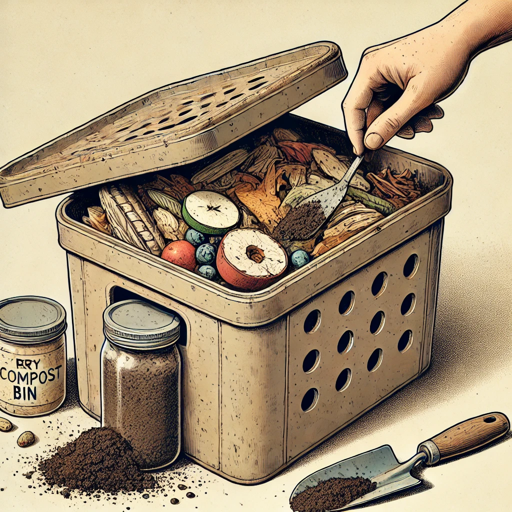

Bem-vindo ao nosso portal dedicado à educação ambiental.

Dicas de Eco-Tips
Dica 1
Reduza o consumo de plástico, optando por sacolas reutilizáveis.
Dica 2
Economize água fechando a torneira enquanto escova os dentes.
Dica 3
Recicle e separe corretamente os resíduos orgânicos e recicláveis.
Produtos Ecológicos
Garrafa de Água Reutilizável
Mantenha-se hidratado com garrafa de água reutilizável, ideal para reduzir o uso de plástico.
Saiba mais
Carregadores Solares Portáteis
Carregue seus dispositivos eletrônicos usando energia solar com nossos carregadores portáteis.
Saiba mais
Recursos Educativos
Impactos das Mudanças Climáticas
Entenda os efeitos das mudanças climáticas no nosso planeta.
Guia de Sustentabilidade
Explore práticas de sustentabilidade que você pode adotar em seu dia a dia para reduzir seu impacto ambiental.
Saiba mais
Projetos DIY
Explore projetos "faça você mesmo" para se envolver mais com a natureza e o meio ambiente.
Composte em Casa
Aprenda a criar uma composteira caseira para transformar resíduos orgânicos em adubo.

Passo a Passo:
- Escolha um recipiente com tampa.
- Faça furos no recipiente para ventilação.
- Adicione uma camada de materiais secos como folhas secas.
- Coloque resíduos orgânicos como restos de frutas e vegetais.
- Adicione uma camada de materiais úmidos como café usado.
- Mexa a mistura regularmente e mantenha o recipiente fechado.
Garrafa de Água Reutilizável
A Garrafa de Água Reutilizável é ideal para reduzir o uso de plástico descartável. Feita de materiais sustentáveis e com um design prático, ela mantém sua bebida fresca e é fácil de transportar.
Benefícios:
- Redução do uso de plástico descartável
- Material sustentável e durável
- Design prático e fácil de transportar
Voltar
Guia de Sustentabilidade
Este guia oferece uma visão abrangente sobre práticas sustentáveis que você pode adotar em seu dia a dia. A sustentabilidade é crucial para preservar nossos recursos naturais e garantir um futuro melhor para as próximas gerações.
Redução de Desperdícios
Dicas para minimizar o desperdício de alimentos e outros recursos em sua vida cotidiana. Inclui práticas simples e eficazes que podem ser incorporadas facilmente no seu dia a dia.
Uso Eficiente de Recursos Naturais
Sugestões para utilizar água, energia e outros recursos de forma mais eficiente. Descubra como pequenas mudanças podem ter um grande impacto na preservação dos nossos recursos.
Consumo Consciente
Orientações sobre como fazer escolhas de compra que reduzam o impacto ambiental. Aprenda a identificar produtos sustentáveis e a reduzir seu impacto através do consumo responsável.
Além disso, este guia inclui estratégias para reduzir sua pegada ecológica, como compostagem, reciclagem e alternativas sustentáveis para produtos de uso diário.
Voltar
Carregadores Solares Portáteis
Nossos carregadores solares portáteis permitem carregar seus dispositivos eletrônicos usando energia solar. Ideais para atividades ao ar livre e emergências.
Benefícios:
- Utiliza energia solar renovável
- Portátil e fácil de usar
- Ideal para atividades ao ar livre
Voltar